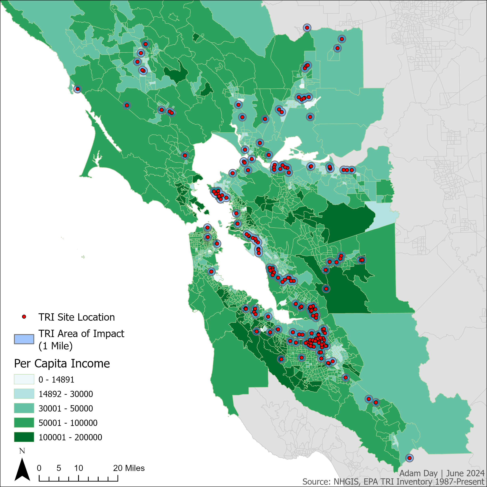

The Relationship Between Toxic Release Sites and Income in San Francisco
Adam Day | July, 2024
INTRODUCTION
“Environmental Justice” as defined by the EPA is “the just treatment and meaningful involvement of all people, regardless of income, race, color, national origin, Triable affiliation, or disability, in agency decision-making and other Federal actives that affect human health and the environment.” This is to ensure anyone will be protected from hazardous environmental effects which impact human health and wellbeing and allow everyone to have equal access to a healthy and sustainable environment where they can work, grow, live, and learn. The term “Environmental Justice” was first coined after the 1968 Memphis Sanitation Strike where individuals fought for better working conditions and pay for Memphis Sanitation workers. The following three decades saw a rise in Environmental Justice activism throughout the United States. By November 1992, the office of Environmental Equity was established based on recommendations from the Environmental Equity Workgroup and in 1994 the office’s name was changed to the Office of Environmental Justice. Through the work of this office, Executive Order 12898 was signed by then President Bill Clinton which focused federal aid to the attention of environmental and human health conditions suffered by predominately minority and low-income populations with the goal of granting to all communities’ environmental protection. It in the spirit of this movement and idea in which this project was conceived.
As previously stated, the Environmental Justice movement is focused on environmental health hazard issues which disproportionately affect minority and low-income populations. The aim of this project is to analyze and highlight areas in the San Francisco Bay area where this may still be occurring. It has been well established that geospatial data management “plays a connecting role between data acquisition, data modelling, data visualization, and data analysis”, and without it “today’s challenges in big data applications such as earth observations, geographic information system building information modeling (GIS/BIM) integration, and 3D/4D city planning cannot be solved.” (Brueing, et. al., 2020). Through the use of geospatial data analysis and U.S. Census Data of Per Capita Income provided by the National Historical Geographic Information System (NHGIS) coupled with EPA provided Toxic Release Inventory (TRI) data, this project focuses its lenses on the San Francisco Bay area in California to show how Per Capita Income can influence the likelihood of being housed near an EPA defined TRI site. The anticipated outcome of this project serves to aid officials and authorities in the future planning and development of new residential or TRI sites to mitigate or limit how closely the two are built in proximity to one another. Furthermore, this project aims to continue the cultivation of the Environmental Justice idea by providing current data analysis of issues faced by low-income and minority populations.
A second analysis was performed using the data produced from the first analysis. By use of Humboldt County Parcels data, which contains information on each parcel’s zoning designation, we could see the extent of impact of sea level rise in each parcel based on its zoning code. To achieve this, the field “EXLU4”, within the attribute table of the Humboldt County parcel data, was summarized to give a count of each parcel’s zoning type based on the following groupings:
This data was joined back to the original attribute table of the Humboldt County Parcel data by use of the Joins and Relates tool, joining them via the “EXLU4” field. After the join was complete, the data was extracted onto its own feature layer and saved. The Polygon to Raster tool was then used on this layer to convert the polygon land use to a raster rile. Cellsize for this new raster was copied from the DEM_Clipped.img raster to ensure consistent measurements. Next, the new parcel raster was multiplied by the 1-meter inundation raster and a new “Area” field was added to the new raster. This field calculated the area of impact by hectare by using the following formula within the Field Calculator tool:
‘Count’ * 0.008035<= 0
This process was repeated for the 2-, 5-, and 10-meter inundation rasters.
Finally, the DEM_Clipped.img raster was reclassified using the Reclassify tool to allow for a classification method for the raster data. The classification method used was Manual with break values set to 0, 1, 2, 5, and 10, leaving the last value as the maximum value in the raster data.
METHODS
The overall design of this project was a geospatial data survey of current per-capita income data along with TRI site location data in San Francisco. While close proximity to TRI sites in relation to residential locations based on Per Capita Income likely exists throughout the U.S., this project focused on the areas surrounding San Francisco. The purpose of limiting our analysis to one small geographic region within a state is to extrapolate the outcomes of our findings to the remaining areas throughout the U.S.
The analysis began with obtaining income data from the NHGIS. We limited our search to geographic tract data using the years 2020 or 2017-2020 as our data range where ‘Per Capita Income’ was included. This provided us with the source table “B19301 Per Capita Income in the Past 12 Months (in 2021 Inflation-Adjusted Dollars)” as well as various GIS shapefiles included with the data. These shapefiles, along with the source table data, were then uploaded into ArcGIS Pro where a layer was created to show our area of focus for this study. The map layer was projected onto the NAD 1983 UTM Zone 10N Projection Coordinate System to accurately reflect the geospatial data locations being analyzed. Our layer was further refined to include only the following counties with their respective FIPS codes:
These counties were then extracted onto their own layer and were formatted in several ways to highlight focus onto them while diminishing focus away from the remaining portions of the area not analyzed in this project.
Next, the income data generated from the NHGIS was included into the counties layer and ‘Join and Relates’ feature of ArcGIS Pro was used to ‘marry’ the data with their appropriate counties. This allowed the income data to be visually reflected for each of the above listed counties. As the codebook for this dataset mentions, this data is for Per Capita Income and is normalized by the Natural Breaks method and reflects the income for the average person. The U.S. federally defined poverty level for an individual during this date range is defined as $14,891, therefore we adjusted the bottom level of our data breaks to this number to better reflect the income situation during this date range. Each data break value was then adjusted by an increase of an order of two to have the final income data break end in any income value greater than $200,000. Thus, our data ranges for each of the breaks resulted in incomes between $0-14k, $30-$50k, $50K-$100K, and $100k-$200k.
Lastly, registered TRI sites in California in 2020 as identified by the EPA were obtained from the EPA and included in this analysis. As with the income data, the TRI sites were added to the counties layer of our map and were geographically displayed using the ‘Display XY Data’ feature of ArcGIS Pro. After the TRI sites were included, the ‘Buffer’ tool was used to highlight precisely a 1-mile “Area of Impact” where these sites might have influence over the health and wellbeing of the environment in relation to areas of low-income. A buffer of 1 Statue Mile was used for this analysis. The outcome of this buffer allowed us to ‘Clip’ these two layers together to create the final map layer shown in Figure 1. ArcGIS Pro allowed us to export a histogram graph of the two datasets to visualize the relationship between income and number of TRI sites in the 1-mile proximity as shown below in Figure 2.
RESULTS
Figure 1 shows the final outcome of our geospatial data analysis with the TRI site locations paired with the income data provided both the NHGIS and the EPA. Figure 2 below describes the data relationship between the number of TRI sites located in areas separated by Per Capita Income. As made evident in Figure 1, many TRI sites are located within areas at or below the Federal poverty line. Figure 2 furthers this visualizes this as we can see the number of TRI sites decreases as Per Capita Income increases. The reverse is also true in that TRI sites increase as Per Capita Income decreases with the mean TRI sites being approximately 55 locations at the $63,157 Per Capita Income level. The highest level of TRI sites found were located in areas where the Per Capita Income level was $47,368 with approximately 70 TRI sites. The lower level of TRI sites found were in areas where the Per Capita Income levels were $126,313, $149,997, and $165,786. In areas of Per Capita Income level of $173,681 and $181,575, no TRI sites were located.
Figure 1: TRI Site by Per Capita Income
Figure 2: TRI Site by Per Capita Income Chart
DISCUSSION
As we can see, evidence does suggest that Per Capita Income has influence on the likelihood of being located near an area where the health of the environmental is impacted by environmental health hazards. It is notable that there exist several clusters of TRI sites located throughout the southeastern portion of the San Francisco Bay area where Per Capita Income levels are lower than that of areas where fewer TRI sites are located. Likewise, many of the higher Per Capita Income areas analyzed in this project showed limited or no TRI sites within their boundaries. This gives further credit to the previously stated conclusion regarding Per Capita Income and proximity to environmental hazard sites.
While current income data does show influence over communities that will be disproportionally affected by environmental hazards, there does appear to be some gaps in the literature as to whether or not it is the racial makeup of these communities which has any influence over environmental hazard locations, or if it is influence more by class of these communities. A 2009 article titled “Environmental Justice” reviewed twenty years of scholarly articles with the claims that pollution and environmental risk are disproportionally distributed by race and class. The review found that when analyzing data regarding hazardous waste facilities “the poor and people of color are more heavily concentrated around such facilities than previous studies found” (Mohai, et. al., 2009). However, a more recent 2014 review of major empirical research on Environmental Justice contradicts this claim by stating that “the empirical foundations of Environmental Justice are so underdeveloped that little can be said with scientific authority regarding the existence of geographical patters of disproportionate distributions and their health effects on minority, low-income, and other disadvantaged communities” (Bowen, 2002). Perhaps future research efforts could seek to address which of these variables has more influence on environmental injustices throughout the U.S. Further data collection and analysis would likely result in a clearer picture of the environmental issues faced by these communities and thereby allow for better decision making and policy changes in the future to aid the in Environmental Justice.
REFERENCES
Bowen, William. 2002. “An Analytical Review of Environmental Justice Research: What Do We Really Know?” Environmental Management 29, no. 1 (January): 3–15. https://doi.org/10.1007/s00267-001-0037-8.
Breunig, Martin, Patrick Erik Bradley, Markus Jahn, Paul Kuper, Nima Mazroob, Norbert Rösch, Mulhim Al-Doori, Emmanuel Stefanakis, and Mojgan Jadidi. 2020. "Geospatial Data Management Research: Progress and Future Directions" ISPRS International Journal of Geo- Information 9, no. 2: 95. https://doi.org/10.3390/ijgi9020095\
Mohai, Paul, David Pellow, and J. Timmons Roberts. 2009. “Environmental Justice.” Annual Review of Environment and Resources 34, no. 1 (November): 405–30. https://doi.org/10.1146/annurev-environ-082508-094348.
Steven Manson, Jonathan Schroeder, David Van Riper, Katherine Knowles, Tracy Kugler, Finn Roberts, and Steven Ruggles. IPUMS National Geographic Information System: Version 18.0 [dataset]. Minneapolis, MN: IPUMS. 2023. http://doi.org/10.18128/D050.V18.0